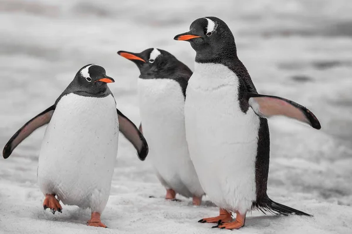

Пінгвіни - це надзвичайно чарівні морські птахи, які живуть у південній півкулі. Вони привертають увагу своїм незвичайним зовнішнім виглядом та унікальними поведінковими особливостями. У цій статті ми дізнаємося деякі цікаві факти про популяцію пінгвінів.
Як йдеться в дослідженні, опублікованому в журналі Antarctic Science, чисельність тварин могла скоротитися через нерегулярне коливання температур і глобальне потепління, але це не єдине і не точне пояснення. Коротко про це пише ScienceAlert. Острів Кошон, що входить в архіпелаг Крозе, безлюдний - в останній раз вчені побували на ньому в 1982 році, через 22 роки після початку спостереження за колонією. У 1960 році на острові жило 500 тис. племінних пар, а зараз чисельність королівських пінгвінів скоротилася до 60 тис. пар. Тобто, колонія, відома ще з 1960-х років, втратила 88 відсотків своєї популяції. Це приблизно третина всіх королівських пінгвінів на Землі.
Але це не єдина з можливих причин скорочення популяції. Так, колонії пінгвінів, що мешкають на інших островах, не зазнали подібних проблем. Наприклад, на острові Поссесьон (теж частина архіпелагу Крозе) чисельність колонії королівських пінгвінів залишається більш-менш стабільною з 1960-х років, в той час як популяції на острові Маріон-Айленд і островах Кергелен навіть збільшилася. Таким чином, як припускають дослідники, причина, ймовірно, швидше локальна (властива лише острову Кошон), ніж глобальна. Наразі розглядається кілька можливих версій. Ель-Ніньо 1997 року, коли відбувалися коливання поверхневих температур в Індійському океані, знизило здатність до добування їжі у королівських пінгвінів на острові Поссесьон - в результаті це негативно вплинуло на розмноження пінгвінів. З тих пір ця колонія відновилася, проте можливо, що на колонію пінгвінів на острові Кошон подія мала сильніший ефект. Можливо також, що пінгвіни перемістилися в інше місце. Зазвичай королівські пінгвіни живуть там же, де народилися і де відбувалося їхнє перше розмноження, проте на супутникових знімках 2005 року виявили іншу, окрему колонію ближче до берега, яку раніше не помічали. Розміри цієї колонії, однак, занадто малі, щоб пояснити таку сильну втрату чисельності.
